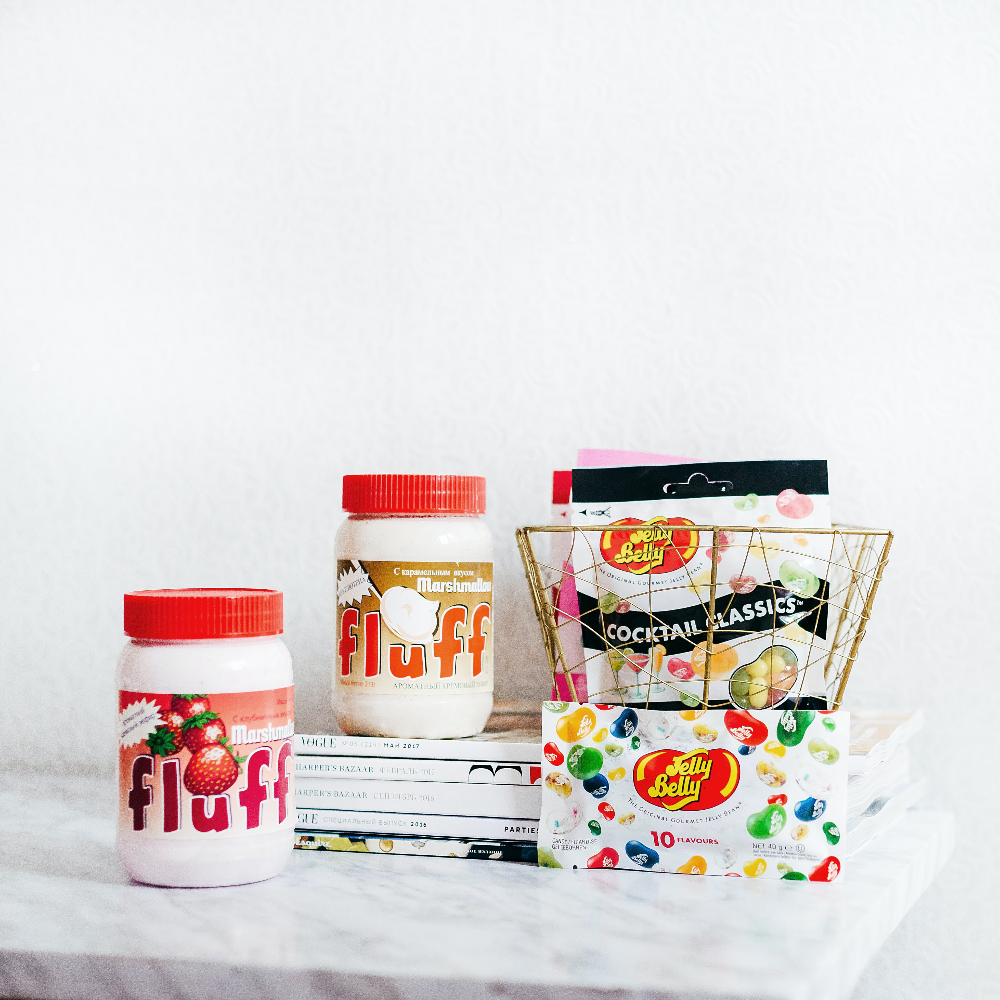

와디즈(wadiz)는 2012년 5월에 설립된 대한민국의 크라우드펀딩 플랫폼 기업이다. 와디즈는 증권형 크라우드펀딩 (투자)과 보상형 크라우드펀딩 (리워드)을 운영하고 있으며, 스타트업과 문화 콘텐츠를 시작으로 식품, 여행 등 펀딩 카테고리를 확장하고 있다. 현재까지 약 2,500건, 총 300억원 규모의 펀딩을 주관하였다.대한민국 외에도 싱가포르, 말레이시아 등 동남아시아 시장에 진출을 준비하고 있다. 또한, 와디즈의 광고에는 영화배우 강하늘이 출연한다.
와디즈 리워드-미출시 제품과 서비스를 제공하여 가치 실현을 위한 자금을 조달하는 프로젝트이다. 기존 시장에서 찾기 어려운 것을 제공하는 것이 목적으로, 미래 먹거리와 얼리어답터를 타겟으로 한 혁신 상품류, 라이프스타일 침투형 여행 상품 등을 리워드 방식으로 제공한다. 와디즈 투자 – 대중이 스타트업이나 문화 콘텐츠에 투자해 채권 또는 주식을 대가로 받는 프로젝트이다. 기존 투자 형태와 달리 투자자가 금융기관을 통하지 않고 직접 투자가 가능하다. 크라우드펀딩 투자 유치 기업은 4차 산업 관련 기업이 대부분으로, 시장성 검증이 어려워 기존 금융시장에서 투자 유치가 어려운 기업들에게 집단 지성으로 기술력을 검증해 투자를 결정한다. 그밖에도 영화, 뮤지컬, 공연 등의 문화 콘텐츠 투자 상품 제공을 통해 대중들이 투자하도록 하고 있다.